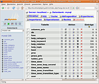

Werkzeuge
Zum Verständnis dieses Artikels sind folgende Seiten hilfreich:
Um nicht auf der Kommandozeile mit mysql und ähnlichen Befehlen arbeiten zu müssen, gibt es zahlreiche Programme, die den Umgang mit einem MySQL-Server durch eine grafische Oberfläche erleichtern.
Von Programmen, um den Server zu administrieren, bis hin zu Programmen, um einfacher Tabellen und Datenbanken bearbeiten zu können, ist alles in den Paketquellen von Ubuntu enthalten.
MySQL Administrator¶
MySQL Administrator  war das offizielle Programm von MySQL, um den Server mit einer GUI zu verwalten. Der MySQL Administrator stand bis Ubuntu 11.10 zur Verfügung.
war das offizielle Programm von MySQL, um den Server mit einer GUI zu verwalten. Der MySQL Administrator stand bis Ubuntu 11.10 zur Verfügung.
MySQL Query Browser¶
MySQL Query Browser war das offizielle Programm von MySQL, um SQL-Abfragen von Hand abzusetzen. Das Programm konnte bis einschließlich Ubuntu 11.10 aus den Paketquellen von Ubuntu installiert werden.
MySQL Workbench¶
MySQL Workbench ist das offizielle Modellierungswerkzeug von MySQL für Datenbanken und hilft bei deren Planung und Wartung. Das Werkzeug gilt als Nachfolger des DBDesigners4 und so können alte Modelle in MySQL Workbench importiert werden.
phpMyAdmin¶
phpMyAdmin (PMA) ist eine freie PHP-Applikation zur Administration von MySQL-Datenbanken. Die Administration erfolgt über das HTTP-Protokoll in einem Browser und kann daher auch via Internet angesprochen werden, ohne auf nur Programmierern bekannte SQL-Befehle zurückgreifen zu müssen.
Die Anwendung kann zwar aus den offiziellen Paketquellen über phpmyadmin installiert [1] werden, ist allerdings der Sektion universe zugeordnet und erhält deswegen keinerlei (Sicherheits-)Aktualisierungen. Empfohlen wird daher eine manuelle Installation der aktuellen Version von der Homepage, die in der Anleitung Quick Install genauer beschrieben wird.

Voraussetzung für die Verwendung von phpMyAdmin ist, dass ein Webserver mit PHP auf demselben System installiert und aktiv ist. Das Installationsskript kümmert sich automatisch um die Einbindung in den Webserver, man muss nur den entsprechenden auswählen (im Normalfall Apache).
Später wird man gefragt, ob man die Einrichtung der MySQL-Datenbank mit dbconfig-common durchführen möchte. Hier "ja" wählen. Jetzt wird man nach dem MySQL-Passwort gefragt, dass bei der Installation von MySQL eingegeben wurde. Falls bei der Installation von MySQL kein Passwort eingegeben wurde, muss dieses Feld leer bleiben. Danach gibt man das Anmeldepasswort für phpMyAdmin ein.
Nach diesen Schritten kann phpMyAdmin mit einem beliebigen Internetbrowser unter:
http://IP_ODER_SERVER-NAME/phpmyadminoderhttp://localhost/phpmyadmin(letzteres nur bei der Installation auf dem eigenen Rechner)
erreicht werden. Benutzername und Passwort sind die des MySQL-Servers. (Also z.B. root und das entsprechende Passwort)
Ab Ubuntu 13.10 bzw. bei Apache 2.4 hat sich der Aufbau der Konfigurationsverzeichnisse des Webservers geändert und die Datei /etc/phpmyadmin/apache.conf muss als Datei phpmyadmin.conf in das Verzeichnis /etc/apache2/conf-available verlinkt, explizit geladen und die Konfiguration des Apache neu eingelesen werden:
sudo ln -s /etc/phpmyadmin/apache.conf /etc/apache2/conf-available/phpmyadmin.conf sudo a2enconf phpmyadmin sudo service apache2 restart
Hinweis:
Wird unter Ubuntu der für Multi-CPU-Umgebungen optimierte Webserver Apache-MPM-Worker mit der CGI-Version von PHP (z.B. php5-fastcgi) verwendet, so muss in der Konfigurationsdatei /etc/phpmyadmin/apache.conf in der Zeile "Options" +ExecCGI ergänzt werden.
Problembehebung¶
Beim Zugriff auf phpMyAdmin kann es zu unterschiedlichen Fehlern kommen. Eine Variante ist die Meldung:
"Ab sofort muss ein geheimes Passwort zur Verschlüsselung in der Konfigurationsdatei gesetzt werden (blowfish_secret)."
Um diesen Fehler zu beheben, öffnet man die Datei /etc/phpmyadmin/config.inc.php in einem Editor [3] mit Root-Rechten [4] und fügt am Ende der Datei Folgendes ein:
$cfg['blowfish_secret'] = '********';
Die Sternchen sollten durch beliebige Zeichen ersetzt werden. Sobald die Änderung gesichert ist, sollte man wieder problemlos mit phpMyAdmin arbeiten können.
Eine andere Fehler-Variante führt ebenfalls dazu, dass man sich nicht anmelden kann. Dies kann unter anderem daran liegen, dass die Datei /etc/php5/apache2/php.ini falsche Werte enthält. Dann muss der Wert post_max_size angepasst werden. Dieser sollte über 8M, aber unter 2G liegen (Standardwert: 8M = 8 MiB). Alternativ kann man auch das Login-Skript /etc/phpmyadmin/config.inc.php angepasst werden. Dazu in der Zeile:
$cfg['Servers'][$i]['auth_type'] = 'cookie';
cookie durch http ersetzen. Allerdings werden nun Anmelde-Daten im Klartext übertragen. Somit sollte man diesen Schritt nur in vertrauenswürdigen Netzwerken durchführen oder die SSL-Verschlüsselung des Webservers aktivieren (siehe Apache/SSL).
Adminer¶
 Eine Alternative zu phpMyAdmin ist Adminer , das ab Ubuntu 12.10 in den offiziellen Paketquellen enthalten ist. Besonders interessant sind verschiedene Erweiterungen (Plugins), die spezielle Aufgaben erleichtern können. Weitere Informationen liefert der Artikel Datenbankverwaltung mit Adminer
Eine Alternative zu phpMyAdmin ist Adminer , das ab Ubuntu 12.10 in den offiziellen Paketquellen enthalten ist. Besonders interessant sind verschiedene Erweiterungen (Plugins), die spezielle Aufgaben erleichtern können. Weitere Informationen liefert der Artikel Datenbankverwaltung mit Adminer  (heise Open Source, 07/2012).
(heise Open Source, 07/2012).
emma¶
emma ist ein Programm zur Manipulation von SQL-Datenbanken für GNOME. Man kann Datenbanken anlegen, Benutzerrechte ändern, Tabellen bearbeiten und anzeigen sowie die Daten exportieren. Leider scheint es nicht mehr weiterentwickelt zu werden.
Das Programm ist in den Paketquellen von Ubuntu enthalten und kann über das Paket emma (universe) installiert [1] werden. Danach findet man es bei Ubuntu-Varianten mit einem Anwendungsmenü unter "Entwicklerwerkzeuge -> Emma".
SQL Buddy¶
Wie Adminer ist SQL Buddy ein leichtgewichtiges Verwaltungswerkzeug (bitte nicht mit SqlBuddy verwechseln), das alternativ zu phpMyAdmin eingesetzt werden kann. Nicht in den offiziellen Paketquellen enthalten, aber leicht installierbar. Die Entwicklung ruht derzeit, die letzte Version stammt aus dem Jahr 2011.
Links¶
mytop
- Überwachungs- und Analysewerkzeug für MySQL. Ähnlich wie top; in den offiziellen Paketquellen enthalten.MySQL - Hauptartikel
MySQL/Backup - Datensicherung
- Erstellt mit Inyoka
-
 2004 – 2017 ubuntuusers.de • Einige Rechte vorbehalten
2004 – 2017 ubuntuusers.de • Einige Rechte vorbehalten
Lizenz • Kontakt • Datenschutz • Impressum • Serverstatus -
Serverhousing gespendet von